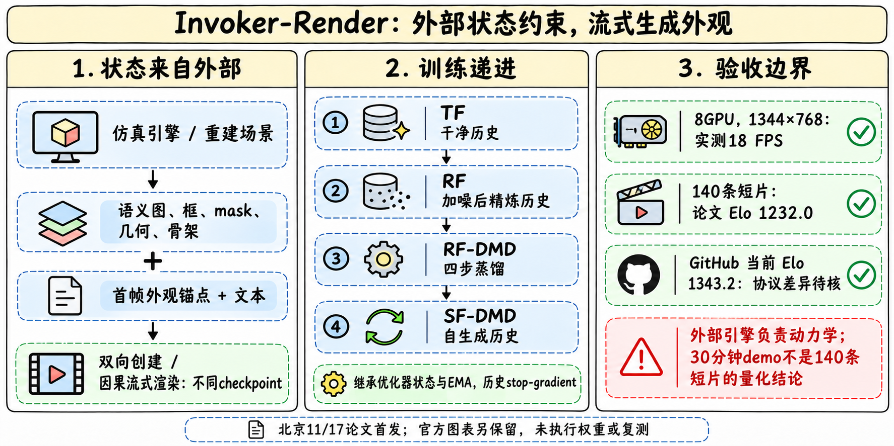
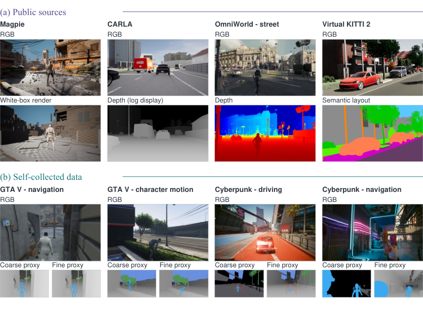
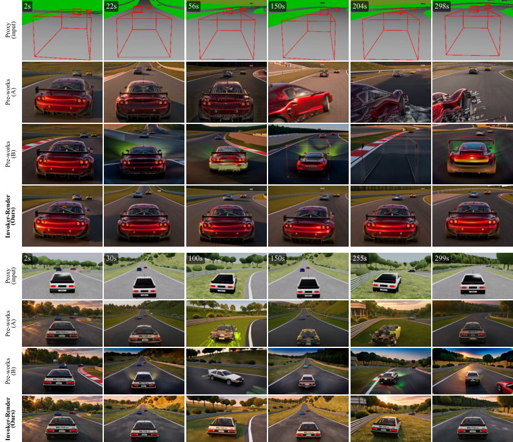

外部状态与多粒度代理


条件包含首帧外观锚点、文本和五类proxy：语义图、稀疏3D框、mask、shaded geometry、框+骨架。粗代理固定根部布局但不约束肢体，细代理给更多结构；训练在同一窗口选择粒度，不据此宣称已验证任意中途LOD切换。
HF causal root约33.12B FP32（29分片、638张量，文件规模约132.5GB）；bidirectional_lora/teacher-live约2.3GB对应MiniMaxH3的双向分支，不得应用到因果root。VAE、Qwen条件组件、causaldecoder等另依赖。代码默认8GPU生产方案；本轮只归档小源码与配置，未取二进制。
数据、TF到SF的训练链
150小时自采、50小时公共（OmniWorld15、Magpie15、CARLA15、其他5），游戏含GTA/Cyberpunk/Elden/Forza，配同步engine buffers或重建。训练窗口与代理变体重复不能算独立泛化样本。
- TF：观察到的干净历史teacher forcing。
- RF：给观察历史加噪后由模型精炼，精炼历史detached，以缓和纯干净历史与推理的差别。
- RF-DMD：在data-anchored历史上四步DMD，冻结双向teacher、训练fake-score，另以teacher特征和可训练head做matched-noise relativistic GAN。
- SF-DMD：用student自生成历史，继承RF-DMD的student、fake-score、discriminator、AdamW moments和student EMA，teacher保持冻结。局部重叠窗口mask使target只计一次，首帧anchor始终保留；rollout内部student权重不变，历史stop-gradient后统一更新。
Guidance-Free Training beta2、condition dropout10%。固定anchor+有界KV历史不是无限记忆；长时保持应与窗口边界、角色再现和相机回返分别验证。公开材料仍没有完整可复现优化器/训练算力账本。
基础设施与实测速率
1344×768、8GPU steady-chunk：基线1.770s/9.9FPS；TAE encoder1.410s/12.4；复用1.180s/14.4；fuse H/C/D由六launch到四后1.165s/14.8；codec与CPU重叠后.930s/18.0FPS。首图与初始化延迟不能用steady-chunk推断。proxy帧数17N+5，最少39，输入首帧1344×768。
全部主结果与评测限制
相同proxy/首帧，裁判看672×384、12FPS时间戳帧，随机顺序平衡，四轴独立给胜平负。Overall不是另三轴平均；Bradley–Terry Elo归一为均值1000，比较集合变化会改变分数。
| v2论文系统 | 步数 | Proxy | Quality | Motion | Overall |
|---|---|---|---|---|---|
| StreamingCWM | 4 | 653.0 | 626.7 | 835.3 | 692.4 |
| StreamRender | 2 | 935.7 | 1011.4 | 882.5 | 940.2 |
| Solar | 4 | 1174.9 | 1152.9 | 1118.1 | 1135.3 |
| Invoker | 4 | 1236.4 | 1209.0 | 1164.1 | 1232.0 |
Invoker分别对CWM130/8/2、Stream116/4/20、Solar88/2/50（胜/平/负）。对Solar胜62.9%、负35.7%，不能只说“明显领先”而隐去失败。GitHub当前Overall为1343.2/1245.3/1051.9/359.6，与论文不一致，未取得统一原始票据，不能混用README Overall与论文分轴。

30分钟racing展示带reference-guided quality policy，默认服务不启用；论文长时图含298/299秒案例。两类演示都不等于140条短片已验证30分钟稳定。原始judge votes、CI、人评及跨引擎测试仍缺。
研究判断、可转化实验与来源
固定引擎状态、动作与proxy，分别测试视觉一致性和任务成功；对RF/SF、历史detach、优化器状态继承、anchor与代理粒度做同预算消融。保存真实engine log，不用模型生成画面自证因果。长期rollout测累积漂移、对象回返、遮挡、分布外动作和实际墙钟，保持短片评测为单独集合。